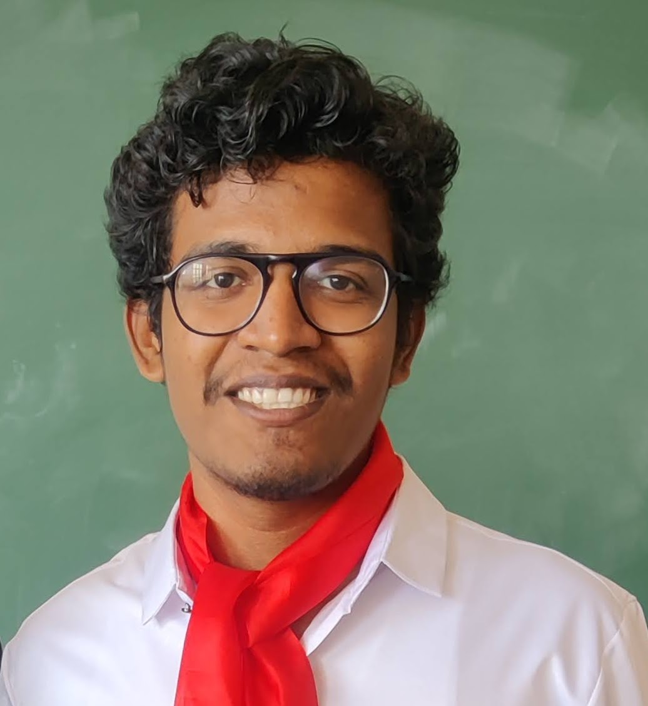

Shalom Jose here.
I'm a Web Developer.
Only by accepting defeats and failures one can become wiser and stronger.
Summary
A graduated aspirant who is interested in Web Development and loves to be
creative.
Education
-
10th Grade (85%) - Our Lady of Good Counsel High School, Sion (2017)
-
12th Grade (78.31%) - SIES College of Arts, Science and Commerce, Sion
(2019)
-
Bachelor of Engineering in Computer (73.48%) - Fr. Conceicao Rodrigues
Institute of Technology, Vashi (2019-2023)
Work Experience
-
Software Developer Intern - Zedex Info Pvt. Ltd.
June 2022 - March 2023
-
Developed a Human Resource Management System (website) for the
company.
-
Software Used: Python and Django Rest Framework, React with
Typescript
Skills
- Problem Solving
- Time Management
- Quick Learner and Adaptation
- C, Python
- SQL
- HTML, CSS, JavaScript
Others